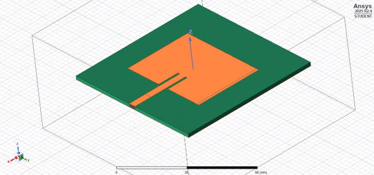
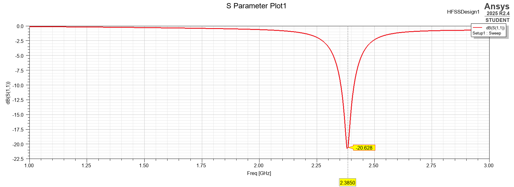
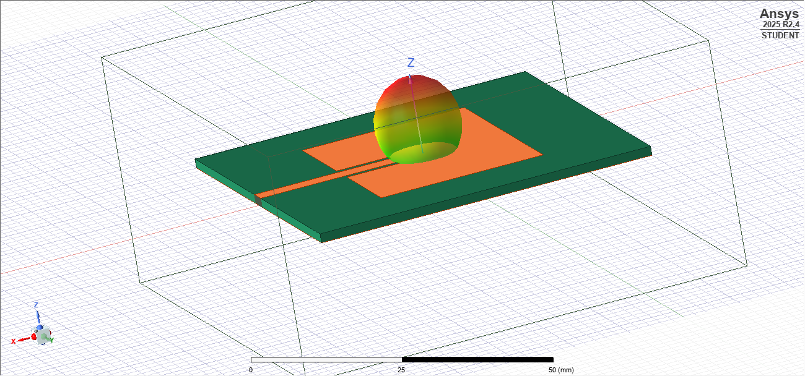

RF / ANTENNA DESIGN
2.4 GHz Microstrip Patch Antenna
Designed and simulated a 2.4 GHz microstrip patch antenna using analytical calculations and Ansys HFSS, then transferred the design into KiCad for PCB fabrication.
01 — OVERVIEW
Project Overview
The objective of this project was to design a microstrip patch antenna operating in the 2.4 GHz ISM band.
I began by calculating the approximate patch dimensions from microstrip antenna theory. These dimensions were then used to construct an electromagnetic model in Ansys HFSS.
I evaluated the antenna using return loss, VSWR, input impedance, and radiation-pattern simulations. The final geometry was then transferred into KiCad for PCB layout.
02 — REQUIREMENTS
Design Requirements
Frequency Band
2.4 GHz ISM
Target Impedance
50 Ω
Substrate
FR4
EM Simulator
Ansys HFSS
PCB Design
KiCad
Antenna Type
Microstrip Patch
03 — ANALYTICAL DESIGN
Calculating the Initial Patch Dimensions
A rectangular microstrip patch antenna approximately resonates when its effective electrical length is one-half wavelength.
Patch Width
W = c / (2f₀) √(2 / (εᵣ + 1))
Where:
- W = patch width
- c = speed of light
- f₀ = desired resonant frequency
- εᵣ = substrate relative permittivity
Effective Dielectric Constant
The fields around a microstrip patch are not completely confined to the dielectric substrate. Part of the electromagnetic field exists in air while part exists inside the substrate.
The patch therefore behaves as if it were embedded in a material with an effective dielectric constant between that of air and the substrate.
Effective Relative Permittivity
ε_eff = (εᵣ + 1)/2 + (εᵣ - 1)/2 × [1 + 12h/W]⁻¹ᐟ²
Effective Patch Length
Using the effective dielectric constant, the approximate electrical length corresponding to the fundamental patch mode can be calculated.
Effective Length
L_eff = c / (2 f₀ √ε_eff)
Fringing Field Correction
The electric fields at the ends of the patch extend beyond the physical copper boundary. This effect makes the antenna electrically longer than its physical dimensions.
Fringing Extension
ΔL / h = 0.412 ((ε_eff + 0.3)(W/h + 0.264)) / ((ε_eff - 0.258)(W/h + 0.8))
The physical patch length is therefore:
L = L_eff - 2ΔL
Initial Geometry
The analytical calculations produced the initial dimensions used to build the HFSS model.
04 — SIMULATION
Building the HFSS Model
The analytical equations provide an initial design, but they rely on approximations. Electromagnetic simulation was therefore used to evaluate the complete antenna geometry.
The patch, dielectric substrate, ground plane, feed structure, and surrounding air volume were modeled in Ansys HFSS.

Simulation Outputs
- Return loss (S11)
- Voltage standing-wave ratio (VSWR)
- Input impedance
- Smith chart
- 3D radiation pattern
- Gain and directivity
05 — IMPEDANCE MATCHING
Matching the Antenna to 50 Ω
Maximum power transfer from the RF source to the antenna occurs when the antenna input impedance is matched to the characteristic impedance of the feed system.
Because the feed transmission line was designed for 50 Ω, the antenna feed geometry was adjusted to bring the antenna input impedance toward 50 Ω at the target frequency.
Reflection Coefficient
Γ = (ZL - Z0) / (ZL + Z0)
Return Loss / S11
S11(dB) = 20 log₁₀ |Γ|
A lower S11 magnitude in decibels indicates that less incident RF power is being reflected back toward the source.

06 — RADIATION
Radiation Pattern
After matching the antenna, the far-field radiation pattern was evaluated to determine how electromagnetic power was distributed spatially.
A microstrip patch primarily radiates perpendicular to the patch surface, producing a broadside radiation pattern.

07 — PCB IMPLEMENTATION
Translating the RF Design to KiCad
Once the antenna geometry was established, the dimensions were transferred into KiCad to create the PCB layout.
At RF frequencies, PCB geometry directly affects circuit behavior. The patch, transmission line, substrate, and ground geometry therefore need to remain consistent with the simulated structure.

08 — RESULTS
Simulation Results
The final antenna performance was evaluated using its resonant frequency, S11, VSWR, input impedance, and radiation pattern.
Final simulation values and plots will be added here after the HFSS results are organized.
2.4 GHz
Target Frequency
50 Ω
Feed System
HFSS
EM Simulation
08 — TAKEAWAYS
What I Learned
This project provided practical experience connecting analytical antenna theory with electromagnetic simulation and PCB implementation.